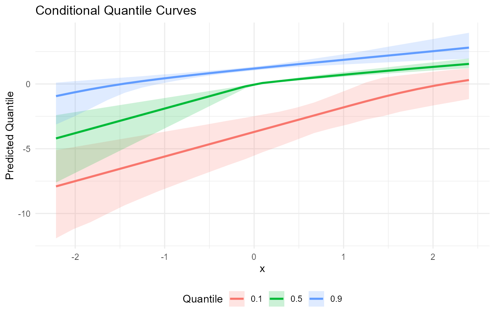

Overview
This vignette demonstrates fitting a conditional model with covariates and generating predictions on a grid of new covariate values.
Theory (brief)
Conditional models allow the bulk mixture parameters to vary with covariates. We write the conditional density as $$ f(y_i \\mid x_i) = \\int K(y_i; \\theta(x_i))\\, dG(\\theta), $$ where the link between $\\theta$ and is encoded through the kernel-specific regression structure. The DP prior provides flexible, data-driven clustering of local distributions across covariate space.
Data Setup
library(DPmixGPD)
data("mtcars", package = "datasets")
df <- mtcars
y <- df$mpg
X <- df[, c("wt", "hp")]
X <- as.data.frame(X)Model Fitting
bundle <- build_nimble_bundle(
y = y,
X = X,
backend = "sb",
kernel = "normal",
GPD = TRUE,
components = 6,
mcmc = mcmc
)
fit <- run_mcmc_bundle_manual(bundle, show_progress = FALSE)Fitted Values
f <- fitted(fit, type = "mean", level = 0.90)
head(f)
fit lower upper residuals
1 14.5 7.16 23.4 6.46
2 18.3 9.23 30.9 2.68
3 11.4 6.60 17.5 11.43
4 25.0 12.41 45.7 -3.61
5 28.5 9.54 54.0 -9.80
6 32.4 15.54 58.2 -14.28
summary(f$residuals)
Min. 1st Qu. Median Mean 3rd Qu. Max.
-177.96 -17.86 -7.98 -17.70 7.00 26.32 Predictions on New Data
new_X <- data.frame(
wt = seq(min(X$wt), max(X$wt), length.out = 25),
hp = stats::median(X$hp)
)
pred_mean <- predict(fit, x = new_X, type = "mean", cred.level = 0.90, interval = "credible")
pred_med <- predict(fit, x = new_X, type = "median", cred.level = 0.90, interval = "credible")
head(pred_mean$fit)
estimate lower upper
1 5.92 3.12 9.12
2 6.73 3.42 10.22
3 7.59 3.86 11.89
4 8.66 4.62 13.34
5 9.79 4.82 16.58
6 11.24 5.56 18.24
head(pred_med$fit)
estimate index id lower upper
1 3.41 0.5 1 2.43 4.54
2 3.91 0.5 2 2.69 5.39
3 4.48 0.5 3 2.99 6.42
4 5.14 0.5 4 3.33 7.60
5 5.91 0.5 5 3.70 8.99
6 6.80 0.5 6 4.13 10.51Quantile Curves
q_levels <- c(0.1, 0.5, 0.9)
q_fits <- lapply(q_levels, function(tau) {
predict(fit, x = new_X, type = "quantile", index = tau, cred.level = 0.90, interval = "credible")$fit
})
q_df <- do.call(rbind, Map(function(tau, df) {
data.frame(wt = new_X$wt, tau = tau, estimate = df$estimate, lower = df$lower, upper = df$upper)
}, q_levels, q_fits))
head(q_df)
wt tau estimate lower upper
1 1.51 0.1 -0.293 -3.666 1.93
2 1.68 0.1 0.214 -3.025 2.08
3 1.84 0.1 0.685 -2.296 2.24
4 2.00 0.1 1.130 -1.513 2.42
5 2.16 0.1 1.529 -0.964 2.62
6 2.33 0.1 1.895 -0.402 2.83
ggplot(q_df, aes(x = wt, y = estimate, color = factor(tau))) +
geom_line(linewidth = 1) +
geom_ribbon(aes(ymin = lower, ymax = upper, fill = factor(tau)), alpha = 0.2, color = NA) +
labs(x = "Weight (wt)", y = "Predicted Quantile", color = "Quantile", fill = "Quantile",
title = "Conditional Quantile Curves at Median Horsepower") +
theme_minimal() +
theme(legend.position = "bottom")